Poster
A small overview of the project. Full background, discussion and limitations are in the poster PDF.
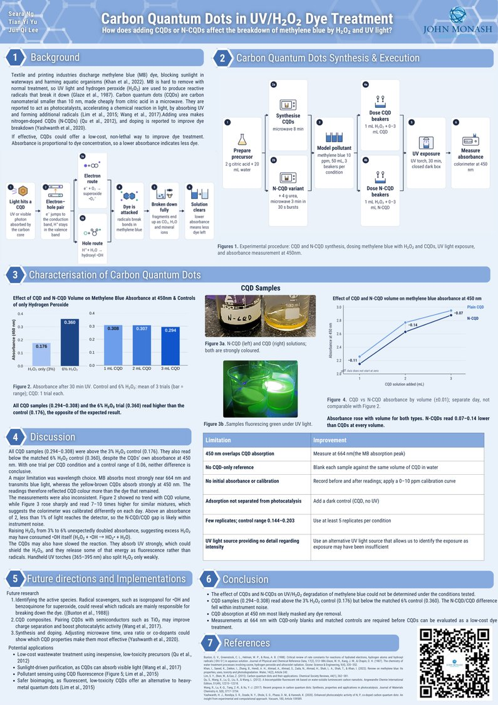
Open full poster (PDF)Research question
Whether cheap, microwave-made carbon dots (plain and nitrogen-doped) speed up UV/H₂O₂ breakdown of a textile dye.
Results
CQD samples read higher absorbance (0.29–0.31) than the H₂O₂-only control (0.18), the opposite of what we expected.
Main takeaway
The CQDs' own colour at 450 nm masked the dye. Next time: measure at 664 nm with CQD-only blanks.
Lab work
Detailed steps + observations
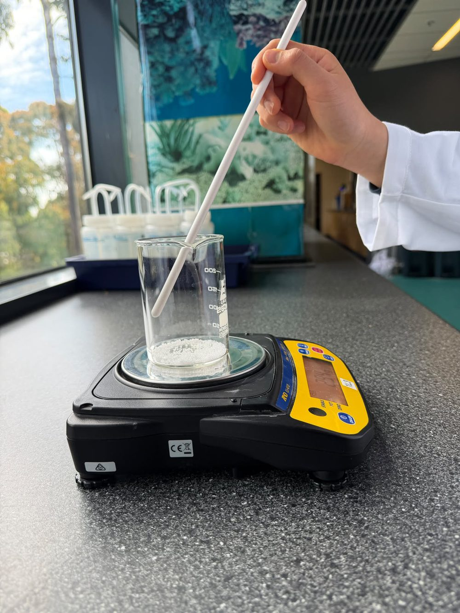
Step 1: Making the carbon dots
2 g citric acid dissolved in 20 mL water, then microwaved for 8 minutes.
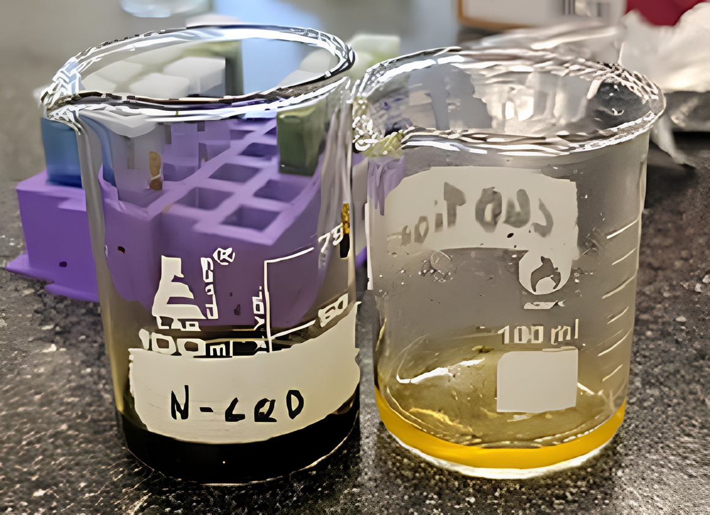
Step 2: The nitrogen-doped batch
Same recipe plus 4 g urea, microwaved in 30-second bursts for 3 minutes. The result (left) was much darker than plain CQDs (right).
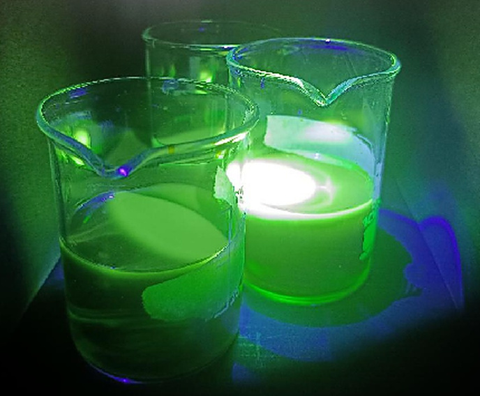
Step 3: Checking they glow
Under a UV torch the samples fluoresced bright green, a sign that carbon dots had formed. Carbon dots absorb UV light and re-emit it as visible green light.
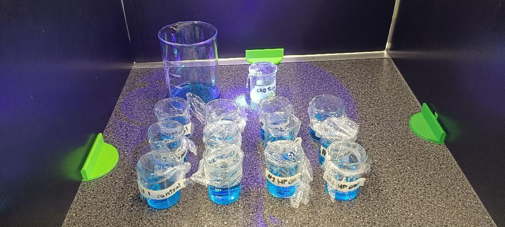
Step 4: Dosing the dye
50 mL of 10 ppm methylene blue per beaker, with 1 mL H₂O₂ and 0–3 mL of CQD or N-CQD solution.
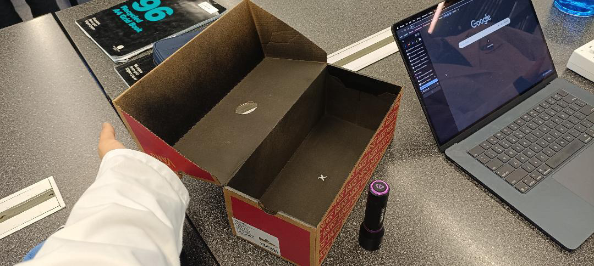
Step 5: 30 minutes under UV
Each beaker sat under a handheld UV torch inside a closed dark box for 30 minutes.
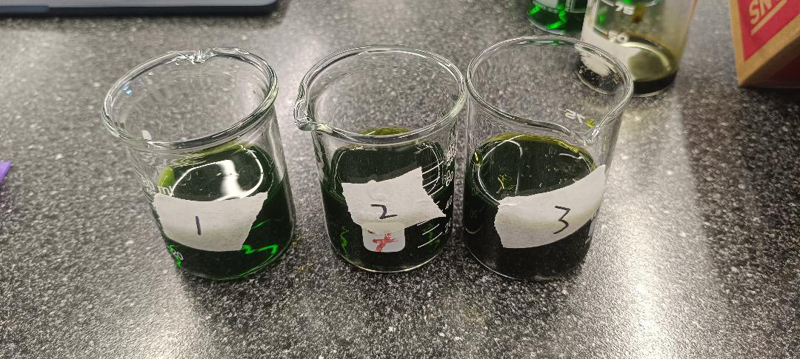
Step 6: Measuring absorbance
A colorimeter read absorbance on six colour channels from 450 to 650 nm. Methylene blue shows up best on the 650 nm (red) channel, closest to its 664 nm peak (see the Absorbance spectrum chart).
See it in 3D
A diagram of a carbon quantum dot's surface chemistry, an animation of its layers, and a one-minute video on how CQDs break down dye.
A CQD's surface groups at work
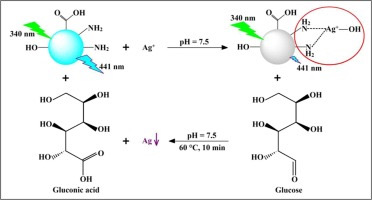
The CQD's surface carries –OH, –COOH and –NH2 groups. It absorbs light at 340 nm and glows at 441 nm. Silver ions (Ag+) bind to the –NH2 groups, and glucose then reduces them to silver metal while turning into gluconic acid. The study used nitrogen-doped CQDs, like our N-CQDs, to detect glucose.
Diagram from Liu, Jia, et al. (2020), Microchemical Journal, 158, 105187, doi.org/10.1016/j.microc.2020.105187. © 2020 Elsevier.
Inside a CQD
How CQDs clean dye-polluted water
Data
How much methylene blue was removed after 30 min UV
Description
Percent of methylene blue removed, from the 650 nm reading and corrected for dilution by the added H₂O₂ and CQD. Whiskers = ±1 SD of 3 repeats; the 1–3 mL CQD beakers were single trials.
Explanation
H₂O₂ and UV alone removed about half the dye (51%). With plain CQDs added, only 10–12% was removed, and with 6% H₂O₂ plus CQD there was no measurable removal. Under these conditions the CQDs seem to have slowed the breakdown.
Which colours each sample absorbs
Description
Absorbance on the colorimeter's six colour channels (450–650 nm) for three samples.
Explanation
Methylene blue absorbs most at the red end (650 nm), and the plain-CQD sample looks almost the same as the dye alone. The N-CQD sample absorbs strongly at 450 nm (violet), so that channel mostly tracks the N-CQDs, not the dye.
N-CQD beakers before and after 30 min UV
Description
Three beakers of methylene blue + 3% H₂O₂ + 1 mL N-CQD, each measured at 650 nm before and after UV (14 Oct).
Explanation
Mean absorbance rose slightly, from 0.739 to 0.761, so no dye was removed. Repeat 1 read high after UV on every channel, possibly from a bubble or smudge.
How much light reaches the detector
Description
Absorbance is logarithmic: % light transmitted = 100 × 10−A. All experimental readings are plotted along this curve, on the 450 nm and 650 nm channels.
Explanation
Eight of the twelve N-CQD readings at 450 nm exceed A = 2, meaning less than 1% of light reaches the detector. At this threshold, background noise dominates the signal, making small differences between these readings (like the 0.07–0.14 gap in poster Figure 4) statistically unreliable. At 650 nm, every reading stays below 1.2.
Adding CQDs raised absorbance above the H₂O₂-only control
Description
Absorbance at 650 nm after 30 min UV. Bars = mean, dots = individual beakers. Grey = no CQD.
Discussion of this result is in poster section 4.
N-CQD amount: before and after 30 min UV
Description
1, 2 and 3 mL N-CQD in methylene blue, measured on the 450 nm (violet) channel before H₂O₂ was added and after 30 min UV (15 Oct). Axis does not start at zero.
Explanation
After UV, readings were 0.07–0.14 lower. All six readings are above A = 2, where less than 1% of light reaches the detector, so this gap may just be instrument noise.
After-UV values are read off the colorimeter screenshot in the prac log (±0.01).
Raw data
Download all 216 readings (CSV)Mean absorbance at 650 nm for each beaker. The CSV has every reading on all six colour channels (what each column means).
| Date | Trial | Condition | Rep 1 | Rep 2 | Rep 3 | Mean | Dye removed |
|---|
Colorimeter screenshots
Raw SPARKvue graphs from the prac log, showing absorbance over time for each sample. Tap to enlarge.
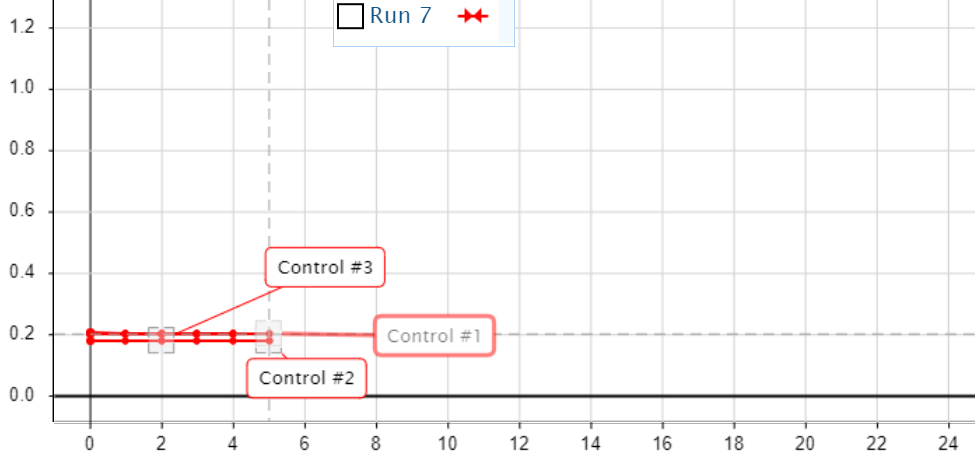
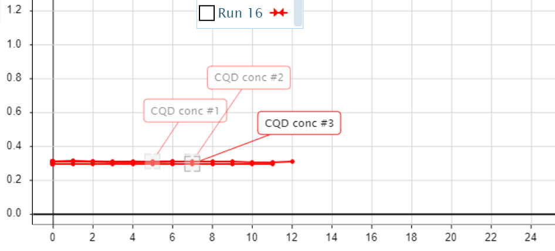
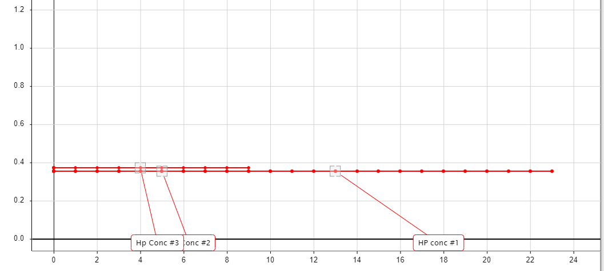
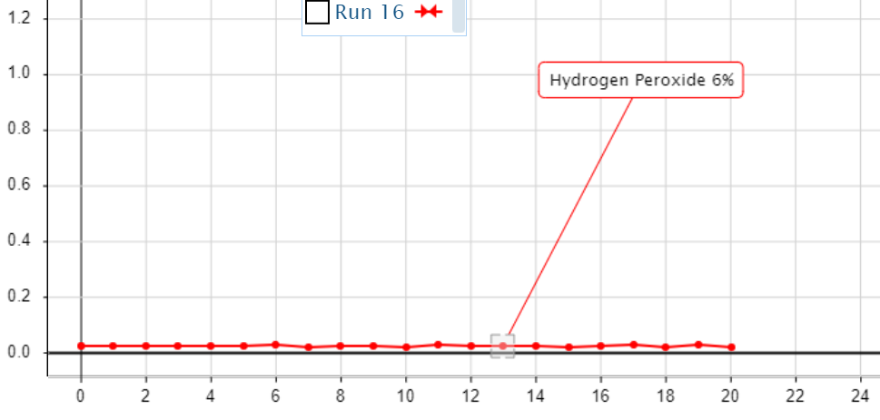
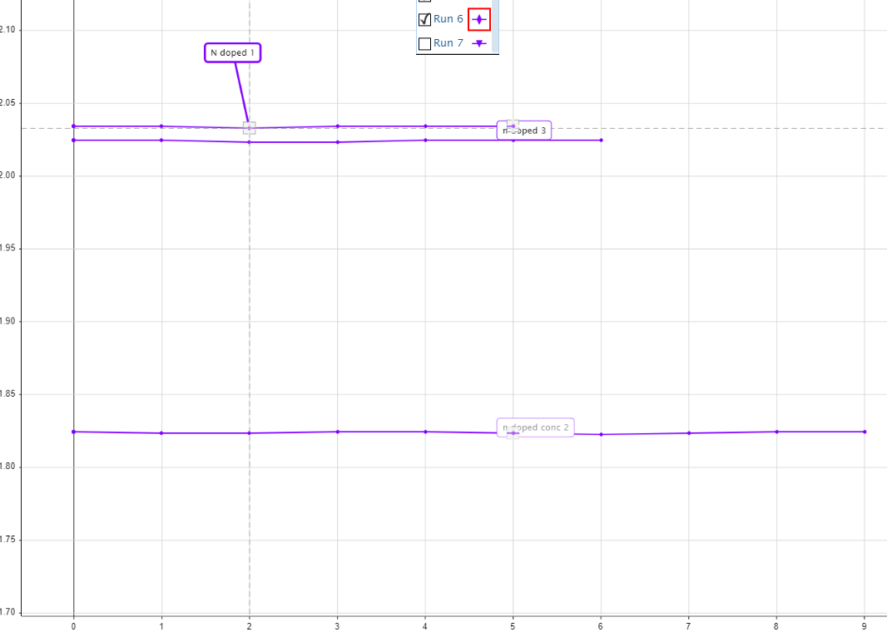
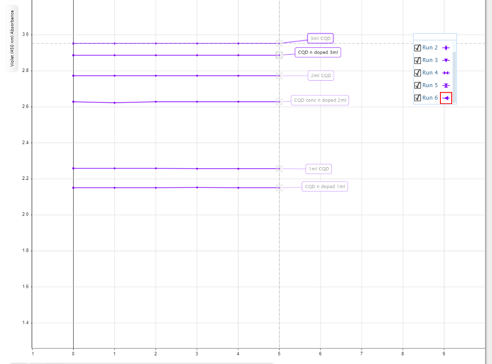
CQDs under the instrument
Our school lab had no electron microscope or spectrometer. Here is what carbon dots look like through the instruments a research lab uses. These images are from published papers, not our own samples: the dots in them are doped with metals (Cu, Fe, Mg, Zn), unlike our plain and nitrogen-doped dots.
Tap an image to enlarge.
TEM · Transmission electron microscopy
Size and shape of the dots
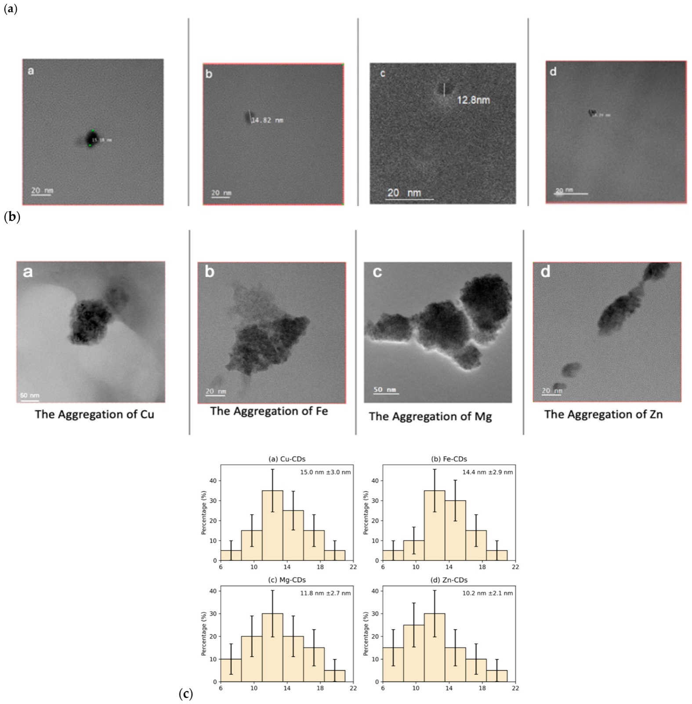
Transmission electron microscope (TEM) images of single metal-doped dots at 100,000× magnification (top), the same dots clumping together at 50,000× (middle), and size histograms from at least 20 particles per sample (bottom). The authors found all samples were quasi-spherical, with average diameters of 15.0 nm (Cu), 14.4 nm (Fe), 11.8 nm (Mg) and 10.2 nm (Zn). Typical carbon dots are under 10 nm; the authors put the larger size down to metal-induced nucleation during synthesis at 260 °C.
Figure 2 from Chen, Cole, et al. (2025), C, 11(4), 87, doi.org/10.3390/c11040087. © 2025 the authors, CC BY 4.0. Resized; no other changes.
FTIR · Fourier-transform infrared spectroscopy
Chemical groups on the surface
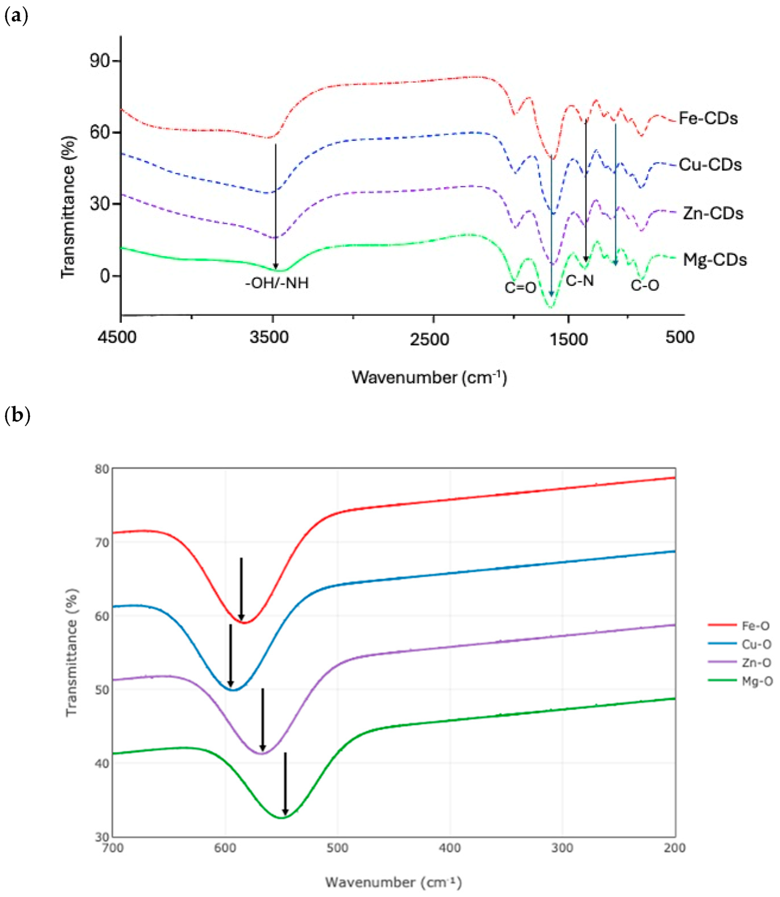
Fourier-transform infrared (FTIR) spectra of the four metal-doped dots. Panel (a) shows bands for –OH/–NH (~3290 cm⁻¹), C=O (~1635 cm⁻¹), C–N (~1265 cm⁻¹) and C–O (1085 cm⁻¹), which the authors say confirm hydrophilic and redox-active surface groups. Panel (b) shows metal–oxygen bands (Fe–O 582, Cu–O 592, Zn–O 567, Mg–O 549 cm⁻¹), confirming the metals are bound into the dots by stable coordination bonds.
Figure 3 from Chen, Cole, et al. (2025), C, 11(4), 87, doi.org/10.3390/c11040087. © 2025 the authors, CC BY 4.0. Resized; no other changes.
XPS · X-ray photoelectron spectroscopy
How the carbon atoms are bonded
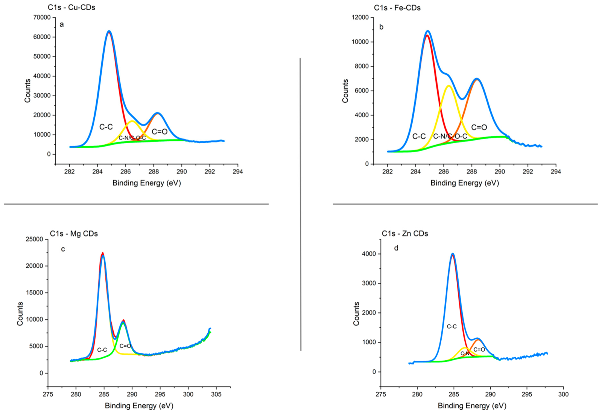
X-ray photoelectron spectroscopy (XPS) of the carbon (C 1s) signal for the Cu-, Fe-, Mg- and Zn-doped dots, split into fitted peaks for different carbon bonds. The peak at ~284.6 eV is C–C/C=C bonds from the sp2-hybridised carbon framework, ~285.8–286.5 eV is C–O or C–N bonds in surface groups, and ~288.0–289.0 eV is carbonyl (C=O) or carboxyl (–COOH) groups formed through surface oxidation.
Figure 6 from Chen, Cole, et al. (2025), C, 11(4), 87, doi.org/10.3390/c11040087. © 2025 the authors, CC BY 4.0. Resized; no other changes.
Zeta potential · Surface charge measurement
Surface charge in water
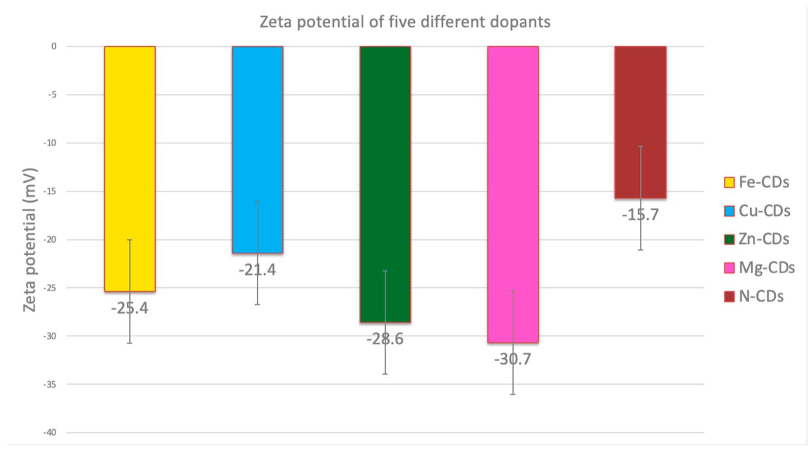
Zeta potential (surface charge) of four metal-doped dots and nitrogen-doped dots; bars are the mean and standard error of three measurements. At neutral pH all the dots have negatively charged surfaces, which the authors link to oxygen-containing (–COOH, –OH) and nitrogen-containing groups. Mg-doped (−30.7 mV) and Zn-doped (−28.6 mV) dots were the most negative, suggesting greater electrostatic repulsion, while nitrogen-doped dots were the least negative (−15.7 mV).
Figure 9 from Chen, Cole, et al. (2025), C, 11(4), 87, doi.org/10.3390/c11040087. © 2025 the authors, CC BY 4.0. Resized; no other changes.
UV–Vis absorption · Diagram, not instrument data
Reading a UV–Vis absorption spectrum
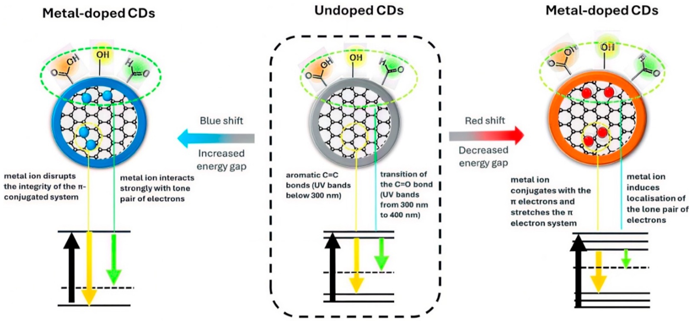
An explanatory diagram from a review article, not a measurement. It shows the electronic transitions behind the UV–Vis absorption bands of carbon dots. Carbon cores have two electronic transitions: π–π* in aromatic sp2 carbons (aromatic C=C, UV bands below 300 nm) and n–π* of the C=O bond (UV bands 300–400 nm). The diagram shows that metal doping can shift these, either a blue shift with an increased energy gap or a red shift with a decreased energy gap.
Figure 2 from Chen, Ball, et al. (2025), Sustainability, 17(8), 3642, doi.org/10.3390/su17083642. © 2025 the authors, CC BY 4.0. Resized; no other changes.
Future implementation
Where our research could go next, and where carbon dots could be used outside the lab.
Future research
-
Identify the active species
Radical scavengers, such as isopropanol for •OH and benzoquinone for superoxide, could show which radicals are mainly responsible for breaking down the dye (Buxton et al., 1988).
-
CQD composites
Pairing CQDs with a semiconductor such as TiO₂ may improve charge separation and boost photocatalytic activity (Wang et al., 2017).
-
Synthesis and doping
Adjusting the microwave time, urea ratio or co-dopants could show which CQD properties make them most effective (Yashwanth et al., 2020).
Potential applications
-
Low-cost wastewater treatment
CQDs are made from inexpensive, low-toxicity precursors, like the citric acid we used (Qu et al., 2012).
-
Sunlight-driven purification
CQDs can absorb visible light, not just UV, so sunlight could drive the clean-up (Wang et al., 2017).
-
Pollutant sensing
CQD fluorescence, the green glow in Step 3, could be used to detect pollutants in water (Lim et al., 2015).
-
Safer bioimaging
Fluorescent, low-toxicity CQDs offer an alternative to heavy-metal quantum dots (Lim et al., 2015).
Contact
Feel free to email us for any questions or collaboration.
References
- Buxton, G. V., Greenstock, C. L., Helman, W. P., & Ross, A. B. (1988). Critical review of rate constants for reactions of hydrated electrons, hydrogen atoms and hydroxyl radicals (·OH/·O⁻) in aqueous solution. Journal of Physical and Chemical Reference Data, 17(2), 513–886.
- Chen, W., Ball, A. S., Cole, I., & Yin, H. (2025). Metal-doped carbon dots as Fenton-like catalysts and their applications in pollutant degradation and sensing. Sustainability, 17(8), Article 3642. doi.org/10.3390/su17083642
- Chen, W., Cole, I., Ball, A. S., & Yin, H. (2025). Metal-doped carbon dots as heterogeneous Fenton catalysts for the decolourisation of dyes—Activity relationships and mechanistic insights. C, 11(4), Article 87. doi.org/10.3390/c11040087
- Glaze, W. H., Kang, J.-W., & Chapin, D. H. (1987). The chemistry of water treatment processes involving ozone, hydrogen peroxide and ultraviolet radiation. Ozone: Science & Engineering, 9(4), 335–352.
- Khan, I., Saeed, K., Zekker, I., Zhang, B., Hendi, A. H., Ahmad, A., Ahmad, S., Zada, N., Ahmad, H., Shah, L. A., Shah, T., & Khan, I. (2022). Review on methylene blue: Its properties, uses, toxicity and photodegradation. Water, 14(2), Article 242.
- Lim, S. Y., Shen, W., & Gao, Z. (2015). Carbon quantum dots and their applications. Chemical Society Reviews, 44(1), 362–381.
- Liu, W., Jia, H., Zhang, J., Tang, J., Wang, J., & Fang, D. (2020). Preparation of nitrogen-doped carbon quantum dots (NCQDs) and application for non-enzymatic detection of glucose. Microchemical Journal, 158, Article 105187. doi.org/10.1016/j.microc.2020.105187
- Qu, S., Wang, X., Lu, Q., Liu, X., & Wang, L. (2012). A biocompatible fluorescent ink based on water-soluble luminescent carbon nanodots. Angewandte Chemie International Edition, 51(49), 12215–12218. doi.org/10.1002/anie.201206791
- Wang, R., Lu, K.-Q., Tang, Z.-R., & Xu, Y.-J. (2017). Recent progress in carbon quantum dots: Synthesis, properties and applications in photocatalysis. Journal of Materials Chemistry A, 5(8), 3717–3734. doi.org/10.1039/c6ta08660h
- Yashwanth, H. J., Rondiya, S. R., Dzade, N. Y., Dhole, S. D., Phase, D. M., & Hareesh, K. (2020). Enhanced photocatalytic activity of N, P, co-doped carbon quantum dots: An insight from experimental and computational approach. Vacuum, 180, 109589.